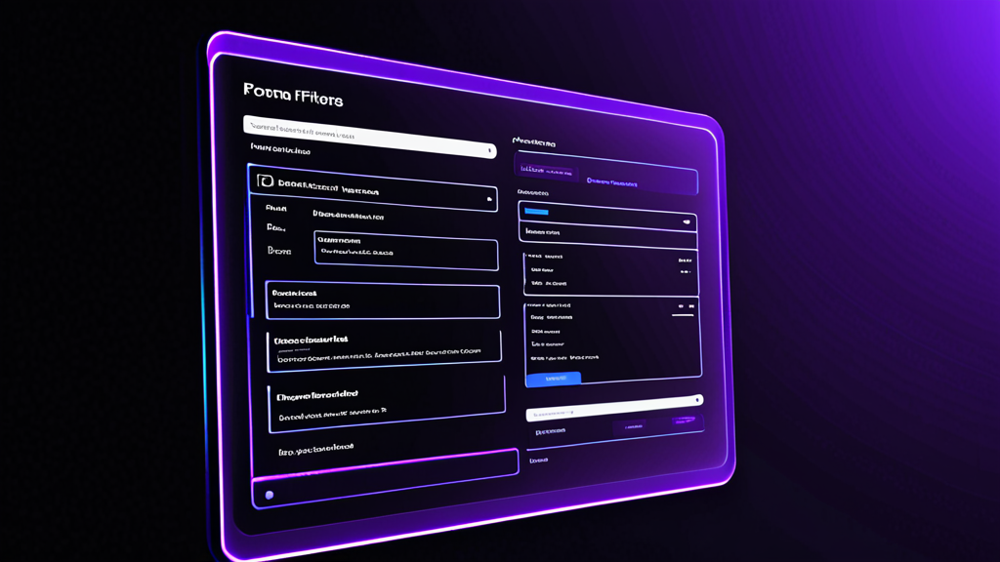

How to Automate Medical Form Filling: A Practical Guide for Healthcare Teams
Todo consultório médico conhece o problema: copiar o mesmo nome do paciente, data de nascimento e número do plano de saúde em formulário após formulário. Você digita no EHR, depois no portal de autorização prévia, depois em um formulário de encaminhamento em papel. É repetitivo, propenso a erros e consome um tempo que poderia ser dedicado ao atendimento ao paciente.
Aprender como automatizar o preenchimento de formulários médicos é uma das mudanças de maior retorno sobre investimento que um consultório pode fazer. Não exige uma reformulação completa do software nem um grande projeto de TI. Com as ferramentas certas e alguns ajustes no fluxo de trabalho, é possível reduzir o tempo de preenchimento em 50 a 70%.
Este guia aborda as etapas práticas que qualquer profissional de saúde pode adotar hoje.
Por Que o Preenchimento Manual Está Custando Caro ao Seu Consultório
Vamos aos números. Um funcionário típico da recepção preenche de 20 a 40 formulários de pacientes por dia. Cada formulário leva de 3 a 5 minutos apenas com os dados demográficos. Isso representa de 1 a 3 horas por dia gastas com digitação de dados que deveriam ser automáticos.
O custo real não é apenas o tempo — é a precisão. Quando você digita manualmente, convida erros:
- Dígitos trocados nos números de identificação do plano de saúde
- Nomes de pacientes escritos errado
- Data de nascimento incorreta em um formulário de solicitação
- Números de NPI do prestador ausentes
Cada erro gera uma cascata de problemas: solicitações negadas, autorizações prévias atrasadas, pacientes frustrados e telefonemas extras para corrigir falhas.
A automação de formulários médicos aborda diretamente esses pontos críticos. Ela não substitui o julgamento humano — elimina a parte mecânica e repetitiva da digitação para que você possa se concentrar nas exceções e no trabalho voltado ao paciente.
O Que Você Precisa para Automatizar o Preenchimento de Formulários Médicos
Antes de escolher uma solução, entenda como é um bom fluxo de automação. O objetivo é preencher formulários com dados que você já possui, sem redigitá-los.
Aqui está o que você precisa:
1. Uma Fonte Central de Dados
Os dados demográficos dos pacientes, informações do plano de saúde e dados dos prestadores precisam estar em algum lugar acessível. Pode ser:
- Seu sistema de gestão de consultório
- Uma planilha segura (para consultórios menores)
- Um portal dedicado de coleta de dados do paciente
Os dados não precisam ser perfeitos — mas precisam estar organizados. Limpe primeiro os campos mais comuns: nome do paciente, data de nascimento, endereço, plano de saúde e número de identificação, nome e NPI do médico de referência.
2. Uma Forma de Inserir Esses Dados nos Formulários
É aqui que entra uma ferramenta de preenchimento de formulários médicos. As melhores soluções funcionam como extensões de navegador que reconhecem campos de formulários e os preenchem automaticamente. Elas não exigem integração com seu EHR ou APIs especiais.
Procure uma ferramenta que:
- Funcione em vários sites e portais (não apenas em um EHR)
- Mantenha os dados localmente (abordagem focada em privacidade)
- Permita personalizar quais campos são mapeados para quais dados
- Suporte tanto campos de texto quanto menus suspensos
3. Modelos para Formulários Repetidos
Se seu consultório preenche o mesmo formulário de encaminhamento ou solicitação de autorização prévia repetidamente, crie um modelo. Armazene os campos comuns — endereço do consultório, códigos de diagnóstico frequentes, dados de prestadores usados com frequência — para que você só preencha as informações específicas do paciente a cada vez.
Passo a Passo: Automatizando Seu Primeiro Tipo de Formulário
Vamos a um exemplo real. Digamos que você processe solicitações de autorização prévia para exames de imagem. Cada solicitação exige:
- Dados demográficos do paciente
- Informações do plano de saúde
- Dados do médico solicitante
- Indicações clínicas
Veja como automatizar isso:
Passo 1: Identifique os campos do formulário. Abra o portal de autorização prévia e anote cada campo. Agrupe-os em categorias: informações do paciente, do plano de saúde, do prestador e clínicas.
Passo 2: Prepare seus dados. Crie um documento de referência simples com as informações padrão do seu consultório — seu NPI, CNPJ, endereço, códigos CID-10 comuns. Para dados do paciente, extraia do seu sistema de agendamento.
Passo 3: Use uma extensão de preenchimento automático para saúde. Instale uma ferramenta de preenchimento de formulários de EHR. Configure-a para reconhecer os campos no seu portal de autorização prévia. Mapeie o campo de nome do paciente para a fonte de dados de nome do paciente, o número do plano de saúde para a coluna correta, e assim por diante.
Passo 4: Teste e refine. Faça um teste com um paciente conhecido. Verifique cada campo quanto à precisão. Ajuste os mapeamentos se a ferramenta interpretar mal algum campo. A maioria das ferramentas aprende com as correções.
Passo 5: Treine sua equipe. Mostre à sua equipe como acionar o preenchimento automático e o que verificar manualmente. Automação não significa "configure e esqueça" — significa "preencha o formulário em 10 segundos em vez de 3 minutos e depois confira".
Erros Comuns ao Automatizar Formulários Médicos
Já vi consultórios tentarem a automação e desistirem por causa destes obstáculos. Evite-os:
Erro 1: Automatizar tudo de uma vez. Comece com um tipo de formulário — aquele que você preenche com mais frequência. Faça funcionar perfeitamente antes de passar para o próximo. Tentar automatizar 20 formulários simultaneamente leva à confusão e erros.
Erro 2: Ignorar a qualidade dos dados. Se os endereços dos pacientes forem inconsistentes (às vezes "Rua", às vezes "R."), seu preenchimento automático também será inconsistente. Passe uma hora limpando seus dados primeiro. O retorno é imediato.
Erro 3: Não atualizar os modelos regularmente. Planos de saúde mudam. Números de NPI de prestadores mudam. Defina um lembrete mensal para revisar seus modelos de automação e atualizar informações desatualizadas.
Erro 4: Achar que a ferramenta resolve tudo. Nenhuma automação é 100% precisa. Sempre verifique o formulário final antes de enviar. O objetivo é economizar tempo na digitação, não eliminar a revisão humana.
Considerações sobre Privacidade na Automação de Formulários Médicos
Dados de saúde são sensíveis. Ao explorar soluções de automação para consultórios médicos, a privacidade deve ser sua prioridade máxima.
Aqui está o que procurar:
- Armazenamento local de dados. A ferramenta deve armazenar os dados dos pacientes no seu próprio computador, não em um servidor na nuvem. Isso mantém a conformidade com a HIPAA sem burocracia extra.
- Sem transmissão de dados. A ferramenta de preenchimento automático nunca deve enviar seus dados a terceiros. Ela simplesmente lê seus dados locais e os insere nos campos do formulário.
- Acesso somente leitura. A ferramenta deve ser capaz de ler os campos do formulário, mas não modificar outras partes do site ou sistema.
Se você estiver em uma organização de saúde maior, consulte seu departamento de TI antes de instalar qualquer software novo. A maioria das ferramentas modernas de preenchimento automático são extensões leves de navegador que não exigem privilégios de administrador, mas é sempre melhor verificar.
Além dos Dados Demográficos: Automatizando Campos Clínicos
A maioria das ferramentas de preenchimento de formulários médicos lida bem com dados demográficos dos pacientes. Mas a economia de tempo real vem da automação de campos clínicos — as partes que exigem digitação de sintomas, diagnósticos e histórico médico.
Você pode automatizar campos clínicos:
- Criando uma biblioteca de frases comuns (ex.: "Paciente apresenta dor lombar irradiando para a perna esquerda")
- Usando macros ou expansores de texto junto com sua ferramenta de preenchimento automático de formulários de pacientes
- Pré-preenchendo campos estruturados como códigos CID-10 a partir de uma lista suspensa
Isso é especialmente útil para:
- Cartas de encaminhamento
- Resumos clínicos para autorização prévia
- Modelos de notas de evolução
- Cartas de recurso para planos de saúde
O segredo é automatizar o texto padrão e deixar espaço para personalização. Cada paciente é único — mas a forma como você descreve condições comuns não precisa ser redigitada toda vez.
Medindo o Impacto da Automação
Depois de implementar a automação de formulários médicos, acompanhe os resultados. Aqui está o que medir:
- Tempo por formulário. Antes da automação, cronometre quanto tempo leva para preencher um formulário específico. Após a automação, cronometre novamente. A diferença é sua economia.
- Taxa de erros. Conte quantos formulários precisam de correções ou reenvios. A automação deve reduzir esse número significativamente.
- Satisfação da equipe. Pergunte à sua equipe da recepção se eles se sentem menos estressados. A redução da fadiga com digitação é um benefício real.
A maioria dos consultórios vê uma redução de 60 a 70% no tempo de preenchimento de formulários na primeira semana. Isso representa horas por dia devolvidas à interação com o paciente ou outras tarefas.
Quando Usar um Preenchedor de Formulários Médicos Dedicado vs. Automação Geral
Você pode se perguntar: não posso simplesmente usar uma ferramenta de preenchimento automático genérica ou um gerenciador de senhas? A resposta curta é não — ferramentas genéricas não entendem a estrutura de formulários médicos.
Uma extensão de preenchimento automático para saúde específica entende:
- Rótulos de campos médicos (ex.: "Data de Nascimento do Paciente" vs. "DOB")
- Menus suspensos para planos de saúde
- Blocos de endereço com múltiplos campos
- Terminologia clínica
Ferramentas genéricas tratam cada campo como uma caixa de texto genérica. Elas não conseguem distinguir entre o sobrenome de um paciente e o sobrenome de um prestador no mesmo formulário. É por isso que ferramentas específicas para a área médica valem o investimento.
Uma opção que vale a pena avaliar é o MedAutoFill, uma extensão do Chrome projetada especificamente para formulários de saúde. Ela lida com dados demográficos, planos de saúde, detalhes de prestadores e campos clínicos em vários sistemas — e mantém todos os dados localmente para privacidade.
Começando Amanhã
Você não precisa de um plano de implementação de seis meses. Aqui está o que fazer esta semana:
- Escolha um formulário. Selecione o formulário que seu consultório preenche com mais frequência.
- Liste os campos. Anote cada campo desse formulário.
- Reúna os dados. Extraia as informações necessárias para um único documento ou planilha.
- Instale um preenchedor de formulários médicos. Configure-o para aquele formulário específico.
- Teste com 5 pacientes. Verifique a precisão e faça ajustes.
- Treine um membro da equipe. Peça que ele use a ferramenta por um dia.
- Expanda para o próximo formulário.
É isso. Comece pequeno, comprove o valor e depois amplie.
Conclusão
Aprender como automatizar o preenchimento de formulários médicos não é sobre adotar tecnologia chamativa. É sobre remover o atrito do seu fluxo de trabalho diário para que você possa focar no que realmente importa — atendimento ao paciente, faturamento preciso e operações eficientes.
As ferramentas existem hoje. Os fluxos de trabalho são simples. O ROI é imediato.
Se seu consultório está pronto para testar uma solução dedicada, o MedAutoFill foi criado especificamente para profissionais de saúde que precisam preencher formulários mais rápido sem comprometer a privacidade ou a precisão. Ele funciona em sistemas EHR, portais de planos de saúde e softwares de consultório médico — tudo mantendo seus dados na sua máquina.
Visite o MedAutoFill na Donbrico para ver se ele se encaixa no seu fluxo de trabalho. Sem pressão — apenas uma ferramenta que faz uma coisa bem: ajudar você a preencher formulários mais rápido.